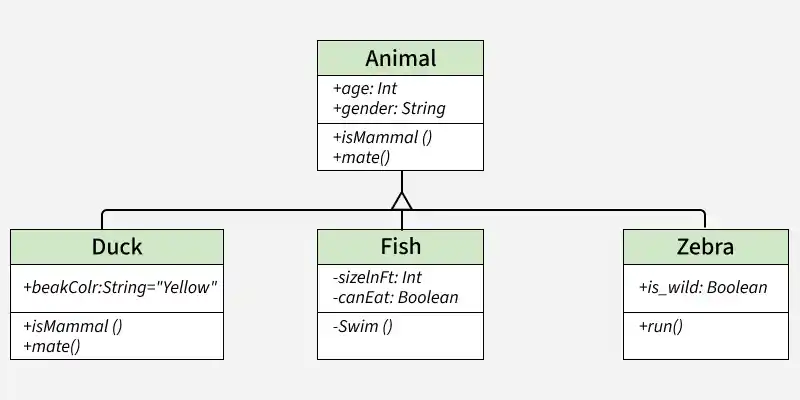
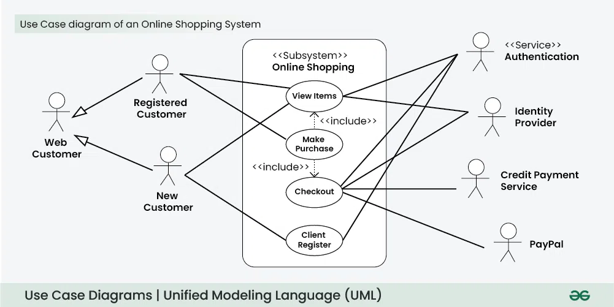
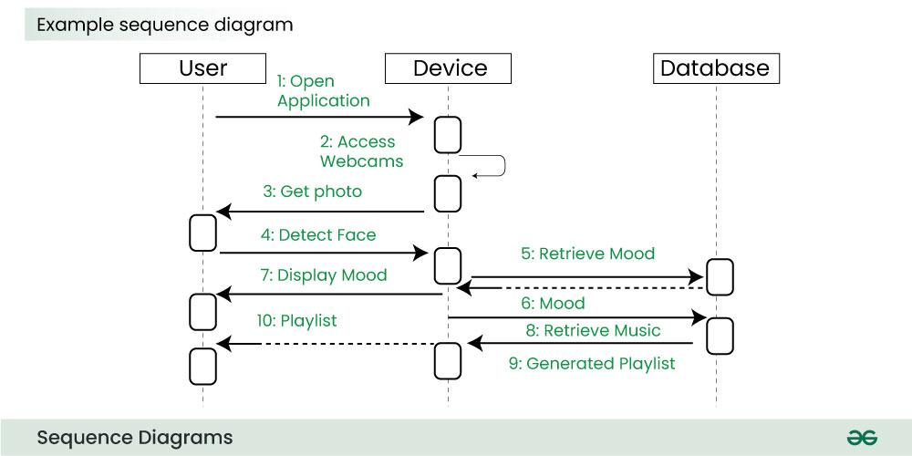
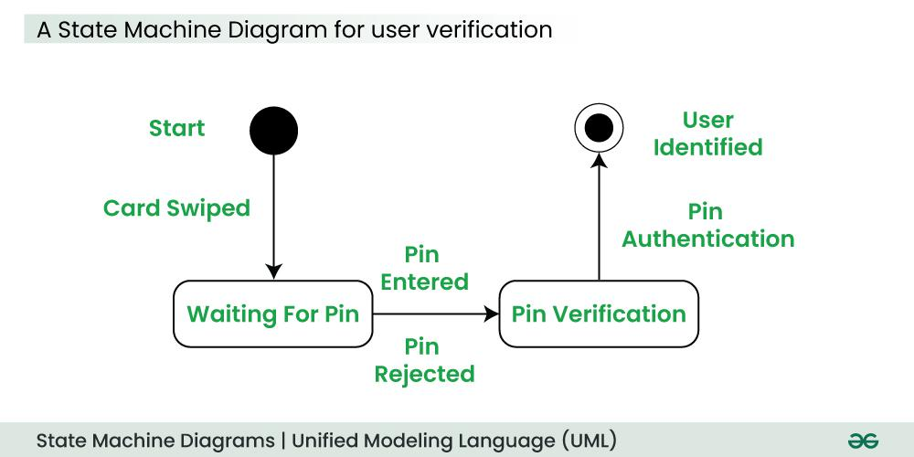
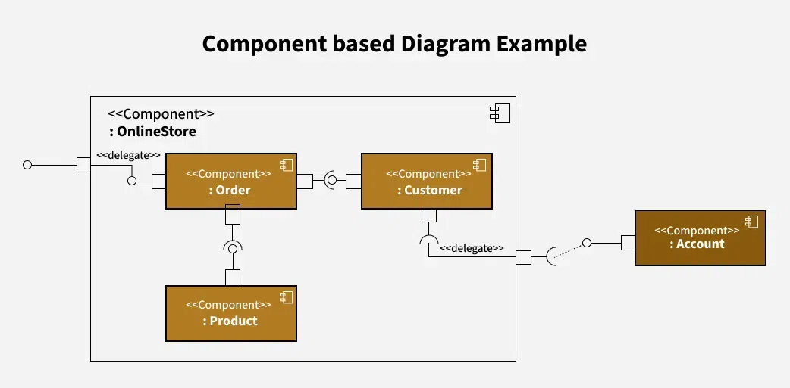

Ühendatud modelleerimiskeel (UML) on üldotstarbeline modelleerimiskeel. UML-i peamine eesmärk on määratleda standardne viis süsteemi kavandamise visualiseerimiseks.
Kõige laialdasemalt kasutatav UML-diagramm on klassidiagramm. See on kõigi objektorienteeritud tarkvarasüsteemide ehitusplokk. Klassidiagrammide abil kujutame süsteemi staatilist struktuuri, näidates süsteemi klasse, nende meetodeid ja atribuute.

Elemendid: Klassi kast (nimi, atribuudid, meetodid), Seosejooned.
Kasutusjuhtude diagramm on ühtse modelleerimiskeele (UML) diagramm, mis kujutab osalejate (kasutajate või väliste süsteemide) ja vaadeldava süsteemi vahelist interaktsiooni konkreetsete eesmärkide saavutamiseks. See annab üldise ülevaate süsteemi funktsionaalsusest, illustreerides erinevaid viise, kuidas kasutajad saavad sellega suhelda.

Elemendid: kasutajad (kriipsujukud), tegevused (ovaalid) ja seosed (jooned).
Järjestusdiagramm näitab, kuidas objektid süsteemis aja jooksul üksteisega suhtlevad. See aitab visualiseerida objektidevaheliste sõnumite ja toimingute järjekorda.

Elemendid: Kasutaja (Customer), päringud (nooled), objektid (kastid).
State diagrammi kasutatakse süsteemi või selle osa seisundi esitamiseks lõplikel ajahetkedel. See on käitumisdiagramm ja see esitab käitumist lõplike olekute üleminekute abil.

Elemendid: Komponendid (kastid), Liidesed (nooled).
Komponendipõhine diagramm näitab, kuidas süsteemi komponendid on paigutatud ja omavahel seotud.

Elemendid: Komponendid (kastid), Liidesed (nooled).